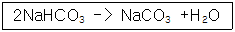

위험물기능사 (2007-04-01 기출문제)
1과목: 화재 예방과 소화방법
1. 유류화재에 해당하는 표시 색상?
- 백색
- 황색
- 청색
- 흑색
(정답률: 88%)

2. 분말소화설비의 기준에서 규정한 전역방출방식 또는 국소방출방식 분말소화설비의 가압용 또는 축압용 가스에 해당하는 것은?
- 네온가스
- 아르곤가스
- 수소가스
- 이산화탄소가스
(정답률: 76%)
3. 소화 효과에 대한 설명으로 옳지 않은 것은?
- 산소공급 차단에 의한 제거효과이다
- 물에 의한 소화는 냉각효과가 대표적이다.
- 가스화재시 가연성가스 공급 차단에 의한 소화는 제거효과이다.
- 소화약제의 증발잠열을 이용한 소화는 냉각효과이다.
(정답률: 70%)
4. 다음과 같은 반응에서 10m3의 탄산가스를 만들기 위해 필요한 탄산수소나트륨의 양은 약 몇 kg인가? (단, 표준상태이고, 나트륨의 원자량은 23이다)

- 18.75
- 37.5
- 56.25
- 75
(정답률: 23%)
5. 다음 중 소화약제로 사용할 수 없는 물질?
- 이산화탄소
- 제 1인산암모늄
- 황산알루미늄
- 브롬산암모늄
(정답률: 54%)
6. 소화기에 "A-2"로 표시되어 있었다면 숫자"2가 의미하는 것은?
- 소화기의 제조번호
- 소화기의 소요단위
- 소화기의 능력단위
- 소화기의 사용순위
(정답률: 84%)
7. 다음 물질 중 증발연소를 하는 것은?
- 목탄
- 나무
- 양초
- 니트로셀룰로오스
(정답률: 82%)
8. 동식물유류 400000L 에 대한 소화설비 설치 시 소요단위는 몇 단위인가?
- 2단위
- 3단위
- 4단위
- 5단위
(정답률: 64%)
9. 다음 중 자연발화의 위험성이 가장 낮은 것은?
- 표면적이 넓은 것
- 열전도율이 큰 것
- 주위온도가 높은 것
- 다습한 환경인 것
(정답률: 79%)
10. 분말소화설비의 기준에서 분말 소화약제 중 제 1종 분말에 해당하는 것은?
- 탄산수소칼륨을 주성분으로 한 분말
- 탄산수소나트륨의 주성분으로 한 분말
- 인산염을 주성분으로 한 분말
- 탄산수소칼륨과 요소가 혼합된 분말
(정답률: 73%)
11. 방호대상물의 바닥 면적이 150m2 이상인 경우에 개방형 스프링클러헤드를 이용한 스프링클러설비의 방사구역은 얼마 이상으로 하여야 하는가?
- 100m2
- 150m2
- 200m2
- 400m2
(정답률: 54%)
12. 다음 중 니트로셀룰로오스 화재 시 가장 적합한 소화방법은?
- 할로겐화합물 소화기를 사용한다.
- 분말 소화기를 사용한다.
- 이산화탄소 소화기를 사용한다.
- 다량의 물을 사용한다.
(정답률: 68%)
13. 탱크화재 현상 중 BLEVE에 대한 설명으로 가장 옳은 것은?
- 기름 탱크에서의 수증기 폭발현상이다.
- 비등 상태의 액화가스가 기화하여 팽창하고 폭발하나는 현상이다.
- 화재 시 기름 속의 수분이 급격히 증발하여 기름거품이 되고 팽창해서 기름 탱크에서 밖으로 내뿜어져 나오는 현상이다.
- 고점도의 기름 속에 수증기를 포함한 볼 형태의 물방울이 형성되어 탱크 밖으로 넘치는 현상이다.
(정답률: 56%)
14. 인화성액체 위험물의 저장 및 취급 시 화재예방상 주의 사항에 대한 설명 중 틀린 것은?
- 증기가 대기 중에 누출된 경우 인화의 위험성이 크므로 증기의 누출을 예방 할 것
- 액체가 누출된 경우 확대되지 않도록 주의 할 것
- 전기 전도성이 좋을수록 정전기 발생에 유의할 것
- 다량 저장 취급시에는 배관을 통해 입· 출고 할 것
(정답률: 56%)
15. 유기과산화물을 저장할 때 일반적인 주의사항에 대한 설명으로 틀린 것은?
- 인화성 액체류와 접촉을 피하여 저장한다.
- 다른 산화제와 격리하여 저장한다.
- 습기 방지를 위해 건조한 상태로 저장한다.
- 필요한 경우 물질의 특성에 맞는 적당한 희석제를 첨가하여 저장
(정답률: 54%)
16. 분진 폭발 시 소화방법에 대한 설명으로 틀린 것은?
- 금속분에 대하여는 물을 사용하지 말아야 한다.
- 분진 폭발시 직사주수에 의하여 순간적으로 소화하여야한다.
- 분진 폭발은 보통 단 한번으로 끝나지 않을 수 있으므로 제 2차, 3차의 폭발에 대비 하여야 한다.
- 이산화탄소와 할로겐화합물의 소화약제는 금속분에 대하여 적절하지 않다.
(정답률: 74%)
17. 산 알칼리 소화기에서 소화약을 방출하는데 방사 압력원으로 이용 되는 것은?
- 공기
- 탄산가스
- 아르곤
- 질소
(정답률: 41%)
18. 일반적으로 유류 화재에 물을 사용한 소화가 적합하지 않은 이유에 대한 설명으로 옳은 것은?
- 화재면을 확대시키기 때문에
- 공기의 접촉을 차단시키기 때문에
- 가연성 가스를 발생시키기 때문에
- 인화점이 낮아지기 때문에
(정답률: 76%)
19. 고온체의 색깔이 휘적색일 경우의 온도는 약 몇 C 정도인가?
- 500
- 950
- 1300
- 1500
(정답률: 64%)
20. 지정수량의 100배 이상을 저장 또는 취급하는 옥내저장소에 설치하여야 하는 경보설비는? (단, 고인화점 위험물만을 저장 또는 취급하는 것은 제외)
- 비상경보설비
- 자동화재탐지설비
- 비상방송설비
- 확성장치
(정답률: 83%)
2과목: 위험물의 화학적 성질 및 취급
21. 다음 중 산화성고체 위험물에 속하지 않는 것은?
- Na2O2
- HCIO4
- NH4CIO4
- KCIO3
(정답률: 54%)
22. 다음 중 오황화린이 물과 작용해서 주로 발생하는 기체는?
- 포스겐
- 아황산가스
- 인화수소
- 황화수소
(정답률: 54%)
23. 분진폭발이 대형화되는 경우가 아닌 것은?
- 밀폐된 공간 내 고온, 고압 상태가 유지될 때
- 밀폐된 공간 내 인화성 가스가 존재할 때
- 분진 자체가 폭발성 물질인 경우
- 공기 중 질소의 농도가 증가된 경우
(정답률: 73%)
24. 다음 중 제 2류 위험물만으로 나열된 것이 아닌 것은?
- 철분,황화린
- 마그네슘,적린
- 유황,철분
- 아연분,나트륨
(정답률: 63%)
25. 다음 황린의 성질에 대한 설명으로 옳은 것은?
- 분자량은 약108 이다
- 융점은 약 120C 이다
- 비점은 약150C 이다
- 비중은 약1.83 이다
(정답률: 48%)
26. 알루미늄분의 성질에 대한 설명 중 옳은 것은?
- 금속 중에서 연소열량이 매우 작다.
- 끓는 물과 반응해서 수소를 발생한다.
- 알칼리 수용액과 반응해서 산소를 발생한다.
- 할로겐 원소와의 혼합은 안전하다
(정답률: 68%)
27. 다음 중 인화점이 가장 높은 물질은?
- 이황화탄소
- 디에틸에테르
- 아세트알데히드
- 산화프로필렌
(정답률: 49%)
28. 아마인유에 대한 설명 중 틀린 것은?
- 건성유이다
- 공기 중 산소와 결합하기 쉽다.
- 요오드가가 올리브유보다 작다
- 자연발화의 위험이 있다
(정답률: 60%)
29. 질산에틸의 성질에 대한 설명 중 틀린 것은?
- 비점은 약88C이다
- 무색의 액체이다.
- 증기는 공기보다 무겁다
- 물에 잘 녹는다.
(정답률: 56%)
30. 제 5류 위험물에 대한 설명으로 옳지 않은 것은?
- 자기반응성 물질이다.
- 피크로산은 니트로화합물류이다.
- 모두 산소를 포함하고 있다.
- 니트로화합물을 니트로기가 많을수록 폭발력이 커진다.
(정답률: 55%)
31. 니트로셀룰로오스에 대한 설명 중 틀린 것은?
- 천연 셀룰로오스에 염기와 반응시켜 만든다.
- 함유하는 질소량이 많을수록 위험성이 크다.
- 질화도에 따라 크게 강면약과 약면약으로 구분할 수 있다.
- 약 130C에서 분해하기 시작한다.
(정답률: 44%)
32. HCIO4, HNO3, H2O2 각각의 지정수량을 모두 합하면 얼마인가?
- 200 kg
- 500 kg
- 900 kg
- 1200 kg
(정답률: 71%)
33. 다음 중 제 6류 위험물의 공통된 성질에 해당하는 것은?
- 물에 잘 녹지 않는다.
- 물보다 무겁다
- 유기화합물이다
- 가연성이므로 다른 위험물과 혼합시 주의하여야 한다.
(정답률: 54%)
34. 과산화수소의 성질에 대한 설명 중 틀린 것은?
- 알코올에 용해한다.
- MnO2 kg 첨가시 분해가 촉진된다.
- 농도 약 30%에서는 단독으로 폭발할 위험이 있다.
- 분해시 산소가 발생한다.
(정답률: 62%)
35. 질산의 성질에 대한 설명 중 틀린 것은?
- 분해하면 산소를 발생한다.
- 분자량은 약 63 이다.
- 물과 반응하여 발열한다.
- 금속,백금 등을 부식시킨다.
(정답률: 46%)
36. 다음 3류 위험물의 지정수량이 잘못된 것은?
- (C2H5)3AI : 10 kg
- Ca : 50 kg
- LiH : 300 kg
- AIP : 500 kg
(정답률: 47%)
37. 저장 또는 취급하는 위험물의 최대 수량이 지정수량의 500배 이하일 때 옥외저장탱크의 측명으로 부터 몇 m 이상의 보유공지 너비를 가져야 하는가? (단. 제 6류 위험물은 제외한다)
- 1
- 2
- 3
- 4
(정답률: 65%)
38. 다음 중 염소산나트륨의 저장 및 취급에 대한 설명으로 틀린 것은?
- 건조하고 환기가 잘 되는 곳에 저장한다.
- 방습에 유의하여 용기를 밀전시킨다.
- 유리용기는 부식되므로 철제 용기를 사용한다.
- 금속 분류의 혼입을 방지한다.
(정답률: 74%)
39. 일반적으로 위험물 저장탱크의 공간용적은 탱크 내용적의 얼마 이상, 얼마 이하로 하는가?
- 2/100 이상, 3/100 이하
- 2/100 이상, 5/100 이하
- 5/100 이상, 10/100 이하
- 10/100 이상, 20/100 이하
(정답률: 76%)
40. 인화칼슘이 포스핀가스와 수산화칼슘을 발생하는 경우에 해당하는 것은?
- 가열에 의한 열분해
- 수분의 접촉
- 햇빛에 노출
- 충격 및 마찰
(정답률: 67%)
41. 위험물 운반용기의 외부에 표시하여야하는 사항에 해당하지 않는 것은?
- 위험물에 따라 규정된 주의사항
- 위험물의 지정수량
- 위험물의 수량
- 위험물의 품명
(정답률: 61%)
42. 휘발유의 성질 및 취급시의 주의사항에 관한 설명 중 틀린 것은?
- 증기가 모여 있지 않도록 통풍을 잘 시킨다.
- 인화점이 상온이므로 상온 이상에서는 화기 접근을 금지시켜야한다
- 정전기 발생에 주의해야 한다.
- 강산화제 등과 혼촉시 발화할 위험이 있다
(정답률: 49%)
43. 유황의 지정수량은 얼마인가?
- 20 kg
- 50 kg
- 100 kg
- 300 kg
(정답률: 55%)
44. 디에틸에테르에 대한 설명 중 잘못된 것은?
- 강산화제와 혼합시 안전하게 사용할 수 있다
- 대량으로 저장 시 불활성가스를 봉입하여야한다
- 정전기 발생 방지를 위해 주의를 기울여야한다
- 통풍, 환기가 잘 되는 곳에 저장한다.
(정답률: 64%)
45. 트리니트로페놀에 대한 설명으로 옳은 것은?
- 발화방지를 위해 휘발유에 저장한다.
- 구리용기에 넣어 보관한다.
- 무색 투명한 액체이다.
- 알코올, 벤젠 등에 녹는다.
(정답률: 52%)
46. 금속나트륨을 보호액 속에 저장하는 가장 큰 이유는?
- 탈수를 막기 위해서
- 화기를 피하기 위해서
- 습기와의 접촉을 막기 위하여
- 산소발생을 막기 위하여
(정답률: 72%)
47. 다음 위험물 중 물과 접촉하면 발열하면서 산소를 방출하는 것은?
- 과산화칼륨
- 염소산암모늄
- 염소산칼륨
- 과망간산칼륨
(정답률: 65%)
48. 다음 물질 중 과산화나트륨과 혼합되었을 때 수산화나트륨과 산소를 발생하는 것은?
- 온수
- 일산화탄소
- 이산화탄소
- 초산
(정답률: 62%)
49. 다음 물질 중 제 3류 위험물에 속하는 것은?
- CaC2
- S
- P2O5
- Mg
(정답률: 54%)
50. 다음 중 두 가지 물질을 섞었을 때 수소가 발생하는 것은?
- 칼륨과 에탄올
- 과산화마그네슘과 염화수소
- 과산화칼륨과 탄산가스
- 오황화린과 물
(정답률: 39%)
51. 다음 중 제 1류 위험물의 질산염류가 아닌 것은?
- 질산은
- 질산암모늄
- 질산섬유소
- 칠레초석
(정답률: 51%)
52. 다음중 위험물별 지정 수량이 잘못된 것은?
- 아염소산나트륨 : 50 kg
- 염소산칼륨 : 50 kg
- 과산화나트륨 : 100 kg
- 브롬산칼륨: 300 kg
(정답률: 62%)
53. 무색,무취의 결정이고 분자량이 약 138, 비중이 약 2.5이며 융점이 약610℃ 인 물질로 에탄올에테르에 녹지 않는 것은?
- 과염소산칼륨
- 과염소산나트륨
- 염소산나트륨
- 염소산칼륨
(정답률: 32%)
54. 특수 인화물200L와 제 4석유류 12000L를 저장할 때 각각의 지정수량 배수의 합은 얼마인가?
- 3
- 4
- 5
- 6
(정답률: 60%)
55. 위험물 안전관리자를 해임할 때에는 해임한 날로부터 며칠 이내에 위험물 안전관리자를 다시 선임 하여야 하는가?(오류 신고가 접수된 문제입니다. 반드시 정답과 해설을 확인하시기 바랍니다.)
- 7
- 14
- 30
- 60
(정답률: 45%)
56. 삼황화린은 다음 중 어느 물질에 녹는가?
- 물
- 염산
- 질산
- 황산
(정답률: 28%)
57. 과산화수소 분해방지 안정제로 사용할 수 있는 물질은?
- Ag
- HBr
- MnO2
- H3PO4
(정답률: 49%)
58. "위험물제조소"라는 표시를 한 표지는 백색바탕에 어떤 색상의 문자를 사용해야 하는가?
- 황색
- 적색
- 흑색
- 청색
(정답률: 57%)
59. 다음은 옥외저장탱크와 흙방유제를 나타낸 것이다 탱크의 지름이 10M이고 높이가 15m 라고 할 때 방유제는 탱크의 옆판으로부터 몇 m 이상의 거리를 유지하여야 하는가? (단 인화점 200℃ 미만의 위험물을 저장한다. )
- 2
- 3
- 4
- 5
(정답률: 39%)
60. 다음 중 자체소방대를 반드시 설치하여야 하는 곳은?
- 지정수량 2천배 이상의 제 6류 위험물을 취급하는 제조소가 있는 사업소
- 지정수량 3천배 이상의 제 6류 위험물을 취급하는 제조소가 있는 사업소
- 지정수량 2천배 이상의 제 4류 위험물을 취급하는 제조소가 있는 사업소
- 지정수량 3천배 이상의 제 4류 위험물을 취급하는 제조소가 있는 사업소
(정답률: 56%)